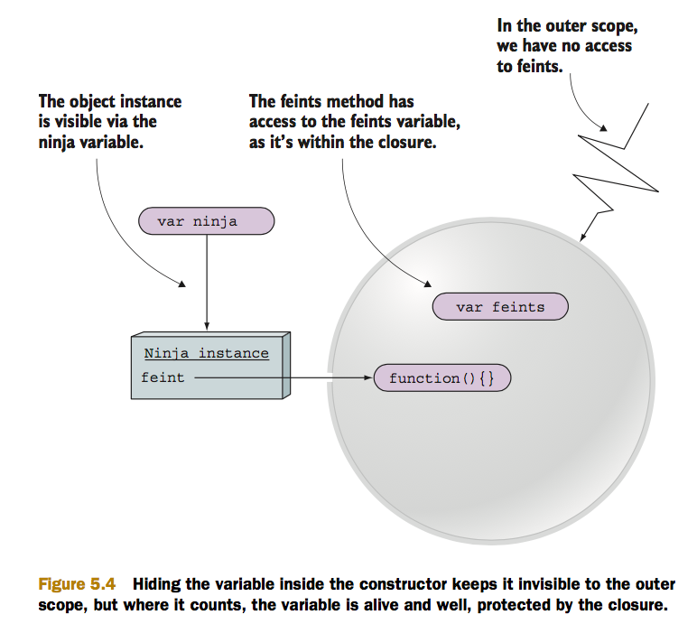
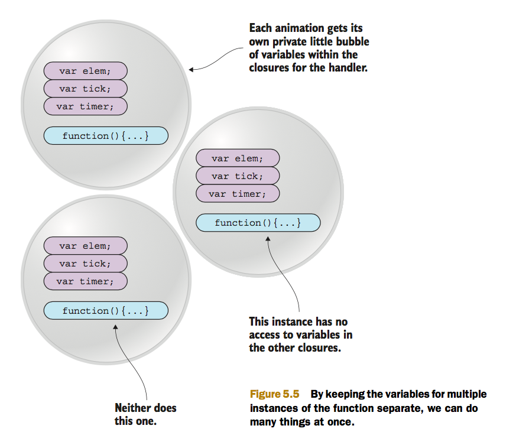

Ejemplo extraido del Libro Secrets_of_the_JavaScript_Ninja_Second.pdf - CHAPTER 5.2.2 - Using closures with callbacks
What’s especially important about this code is that it uses a single anonymous function, placed as a setInterval argument, to accomplish the animation of the target div element. That function accesses three variables: elem, tick, and timer, via a closure, to control the animation process. The three variables (the reference to the DOM element, elem; the tick counter, tick; and the timer reference, timer) all must be maintained across the steps of the animation. And we need to keep them out of the global scope.
But the example will still work fine if we move the variables out of the animateIt function and into the global scope. So why all the arm flailing about not polluting the global scope?
The problem immediately becomes obvious. If we keep the variables in the global scope, we need a set of three variables for each animation. Otherwise, they’ll step all over each other, trying to use the same set of variables to keep track of multiple states.
By defining the variables inside the function, and by relying on closures to make them available to the timer callback invocations, each animation gets its own private “bubble” of variables, as shown in figure.
There’s another important concept that this example makes clear. Not only can we see the values that these variables had at the time the closure was created, but we can update them within the closure while the function within the closure executes. The closure isn’t just a snapshot of the state of the scope at the time of creation, but an active encapsulation of that state that we can modify as long as the closure exists.
